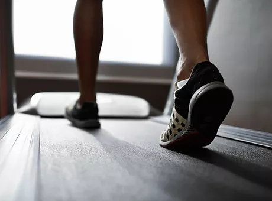
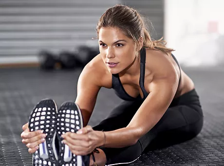

Como um instrutor qualificado e certificado, tenho ajudado os moradores de Maringá a conquistar um corpo saudável. Se quiser perder alguns quilos ou ganhar músculos, entre em contato comigo e comece hoje mesmo!
Sobre mim
Impactando de forma positiva
Acredito que um estilo de vida saudável começa ao manter um corpo forte e em forma. Meu objetivo é ajudar você a identificar seu caminho fitness, criar uma série de exercícios que atendam às suas necessidades e orientar em todos os treinos. Minha abordagem holística para uma vida saudável e fitness fará com que você se sinta bem e veja resultados em pouco tempo. Entre em contato hoje e vamos começar a treinar juntos!
Meu trabalho
O caminho mais rápido para boa forma

Exercícios aeróbicos
Força e resistência
Esta é uma forte tendência no mundo fitness. Se o seu objetivo for perder peso ou tonificar os músculos, meu programa poderá cuidar de sua saúde. Você se sentirá incrível ao notar rapidamente uma melhoria no seu desempenho.
Desenvolvimento de músculos
Melhore seu corpo e sua mente
Uma vida saudável e fitness não significa apenas um corpo em dia, mas também uma mente equilibrada. Trabalho para proporcionar esse equilíbrio entre corpo e mente. O que você está esperando? Agende um horário comigo hoje mesmo!

Treino de flexibilidade
Sua versão mais saudável
O programa exclusivo que desenvolvi ajudará você a queimar calorias, aumentar o metabolismo e melhorar sua saúde em geral. Com uma combinação de exercícios estratégicos e dieta saudável, você conquistará sua melhor forma.
Mudar a sua vida é mais fácil do que imagina. Entre em contato e vamos começar!
Entre em contato e inicie sua vida fitness hoje mesmo.